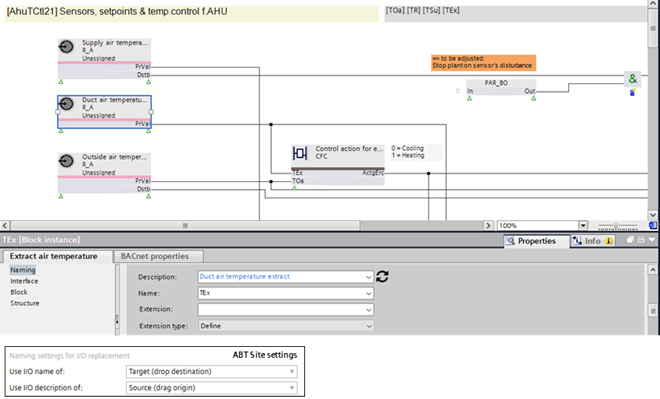

替换名称和描述
客户不接受库中的文本模板。因此，您可以在 ABT 站点中定义自己的名称和描述。
Note：如果您更改标准名称，例如将 TSu 更改为 myTSu，则 Desigo CC 和 Desigo Control Point 中的自动功能将不再起作用。需要重新设计，这会导致管理站产生额外成本。
- The naming rules are defined in Settings > Naming defaults > Naming rules tab.
Naming settings for I/O replacment - The objects are created in ABT Site according to customer requirements.
- Right-click the data point in ABT Site and select Show in program.
- The Programming editor opens.
- Drag a plant from the Plants folder in the Library to Add plant in the Project tree.
- Drag the source data point to the target data point.
- The I/O replacement dialog box opens.
- Click Replace.
- The names and description are changed according the settings.
- Changed texts appears in blue.
- Check the changes in the Element properties tab.
